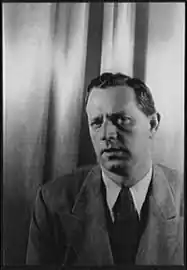

КОЛДУЕЛЛ, Ерскін Престон (17.12. 1903, Морленд, шт. Джорджія — 11.04.1987, Парадайз-Валлі, шт. Арізона) — американський письменник.
Виходець із родини пресвітеріанського священика, дитинство та юність проминули у штаті Джорджія, на "глибокому" Півдні, в одному з глухих провінційних закутків Америки. Згодом у нарисі "Коротка історія Джорджії" Колдуелл відтворив старовинну гравюру, яка зображує упряжку мулів, що тягнуть величезну бочку з тютюновим листом. З часом тютюнництво, основне заняття мешканців штату, почало витісняти бавовну. Ґрунт виснажувався, багато фермерів розорялися, ставали навспільниками. У Джорджії довго зберігалися елементи старої плантаційної системи. Ці невеселі враження дитинства надовго залишились в пам'яті письменника, а Джорджія стала місцем дії багатьох його творів, справжньою "країною Колдуелла".
Із 12 років майбутній письменник почав працювати на фермі, а ночами — ще й на маслозаводі; з тих пір він добре знав, що таке важка фізична праця. Згодом він зізнавався: "Моє життя не було безхмарним, у ньому вистачало похмурого, через те я й пишу про похмурі сторони. Людей, які живуть погано, значно більше, аніж тих, чиє життя сповнене радістю". У 17 років Колдуелл пішов з дому і змінив багато професій; був наймитом, каменярем, робітником на бавовноочисній фабриці, робітником сцени, репортером, офіціантом тощо. Це збагатило його неоціненним запасом життєвих спостережень. Водночас з 1922 р. він навчався в університеті штату Вірджинія, особливо цікавлячись соціологією та економікою. У вільний час багато читав, засвоюючи уроки письменницької майстерності. Залишивши у 1926 р. університет, він зайнявся різноманітним, іноді випадковим літературним заробітчанством: писав газетні замітки, рецензії, хроніку, нариси; окрім того, розсилав по редакціях свої опуси, але довший час отримував відмови. Так тривало близько п'яти років. Як і багато хто з його співвітчизників, таких, як Марк Твен, В. Вітмен, С. Крейн, Т. Драйзер, Д, Лондон, Е. Хемінгвей та ін., він входив у літературу, пройшовши школу газетяра та журналіста, привчившись до точності, конкретності та спостережливості. Він із вдячністю згадує одного зі своїх перших редакторів із "Атлантік джорнел", котрий "починав читати рукопис з м'яким олівцем в руках, з трьохсот-чотирьохсот слів про пожежу, пограбування чи дорожню катастрофу залишалась якась там дюжина рядків". Врешті, 1930 р. перші оповідання Колдуелла побачили світ у журналах, а через рік з'явилася його новелістична збірка "Американська Земля" ("American Earth", 1931); за нею услід йде ще декілька: "Ми живі" ("We Are the Living", 1933), "Навколішки перед сонцем, що сходить" ("Kneel to the Rising Sun", 1935) та ін. Вони, як і романи, здобули Колдуеллу широке визнання й висунули у шерег провідних американських письменників "червоних 30-х". Десятиліття, що настало після жорстокої економічної кризи 1929 p., виявилося найщасливішою та плідною порою на довгому творчому шляху Колдуелла. І хоча в США новела справедливо вважається "національним жанром", представлена великими майстрами і величезним розмаїттям різновидів, Колдуелл проявив себе у цій малій формі оригінальним майстром зі своїм художнім письмом. У його творах цих років змальований образ Америки Колдуеллом — країни тютюнових і бавовняних плантацій, виснаженої землі, напівзлиденних хиж, населених "білими бідняками", навспільниками, неграми, затурканими, загрузлими у невігластві та нужді. Для Колдуелла характерні жорстка, зовні безстороння (тут, можливо, дався взнаки вплив Хемінгвея), манера, лаконізм, точний опис побуту "південних" звичаїв, зображення жорстокості та насильства, натуралістичні деталі, оживлені грубуватим гумором, іронією, схильність до гротескових, а іноді й фарсових ситуацій. Чимало новел Колдуелла справедливо вважаються хрестоматійними. У зумисне холодній манері змальовує він безглузде лінчування негра як щось буденне, звичне ("Суботнього дня"); показує духовне здичавіння провінційних обивателів ("Повнісінько шведів "); гірку долю безробітних ("Повільна смерть"); застійну впертість фермерів-хуторян ("Весняна пожежа"). Але Колдуелл змальовує не лише людей зневажених, котрі ведуть майже біологічне існування; у низці новел з'являються ті, хто протестує проти расового гніту та знущань. Такі негр Клем, який не підкоряється своєму господарю, садисту Арчу Гуннарду, і гине від рук лінчувальників ("Перед сходом сонця"); Крісті Текер, який захищає ціною власного життя свою гідність ("Кінець Крісті Текера"); Кенді Бічем із однойменного оповідання, юний, сильний, прудкий, котрий видається якимсь фольклорним персонажем, що підкреслюється своєрідною казковою інтонацією оповідання. У 1932 р. вийшов друком знаменитий роман Колдуелла "Тютюнова дорога" ("Tobacco Road"), у якому трагічне, гірке химерно поєднується зі смішним, майже фарсовим. У центрі — доля навспільника із Джорджи Джітера Лестера та його збіднілої голодної родини, яка складається з хворої жінки Ади, матері, недоумкуватого 16-річ-ного сина Дьюда та доньки Еллі Мей із заячою губою. Неподалік від них мешкає робітник-залізничник Лов Бенсон, котрий одружився із молодшою донькою Джітера, 12-річною Перл, розплатившись за неї галоном бензину й оберемком старих покривал. Колись дідові Джітера належали хороші землі в окрузі. Тепер у Джітера немає ні добрив, ні насіння, старий автомобіль став зовсім несправним, його неможливо продати. Більшість дітей Джітера пішли з дому. Лестери збідніли, живуть примітивним життям, суто біологічними інстинктами. У романі багато трагічних ситуацій. 50-річна проповідниця Бессі змушує до шлюбу 16-річного Дьюда, вирушає з ним покататися на автомобілі та вбиває стару матір Джітера, котра забарилася на дорозі, та негра фермера. Джітер і Ада гинуть під час пожежі у своїй старій хижі. Поорана дощами, з глибокими вибоїнами "тютюнова дорога", що проходить повз будинок Лестерів, стає в романі символом безрадісного, безглуздого життя бідняків. Сюжет роману згодом використав Д. Кіркленд, котрий зробив інсценізацію для Бродвею. П'єса мала нечуваний комерційний успіх: йшла декілька років і витримала рекордну кількість вистав — 3182. При цьому Юркленд з метою розважальності видозмінив трактування окремих образів. Джітер Лестер перетворився у якогось блазня, котрий ніколи не вмивається, боїться води, що смішило публіку. Джітер і Ада під час пожежі не гинули, а потрапляли у лікарню. Таке трактування Колдуелл не схвалював, заявляючи, що він пише "не для того, аби смішити". Згодом було зроблено також екранізацію цього роману, здійснену видатним американським кінорежисером Д. Фордом, котрий створив знаменитий фільм за романом Д. Стейнбека "Грона гніву". У Джорджи відбувається також дія другого раннього роману Колдуелла — "Акр Господа Бога"("God's Little Acre", 1933), також насиченого гротесковими та комічними сценами. У центрі — родина фермера Тай Тай Волдена, одержимого нав'язливою ідеєю знайти золото: впродовж п'ятнадцяти років він шукає його разом із синами на своїй ділянці, зритій незчисленними ямами, але все безуспішно. У 30-х pp. Колдуелл чимало сил віддав публіцистиці, нарису, багато їздив по "бавовняних" штатах змальовуючи гнітючу картину "іншої Америки", "іншої нації": діти, які стали потворами через недоїдання; погано вдягнені жінки; люди, які живуть у халупах. Такою була реальність Півдня у пору депресії, поки країна не почала внаслідок "Нового курсу" Рузвельта оговтуватись від кризи. Колдуелл був одним із перших, хто у 30-х pp. звернувся до нового жанру, "синтетичного", що поєднує написаний ним лаконічний публіцистичний текст з яскравими наочними фотографіями, виконаними фотокореспондентом М. Борк Байт. У книзі "Ви бачили їхні обличчя" ("You Have Seen their Faces", 1937) виникали похмурі образи американського Півдня: молоді та старі обличчя, помережані зморшками, з померхлими очима, зі слідами важкої праці; ветхі помешкання злидарів; поля, випалені сонцем; в'язні у кайданах. В іншій книзі, "На північ від Дунаю" (1939), темою змалювання стала Чехословаччина, яка щойно зазнала нацистської агресії. Із 2-ої пол. 30-х років Колдуелл активно включився разом із іншими американськими письменниками до антифашистського руху. Осуд расизму він продовжив у збірці новел "Південні звичаї"(1938) та повісті "Випадок у червні" (1940). Успіх випав на долю одного із кращих творів Колдуелла — повісті "Хлопчик із Джорджи" ("Georgia Boy", 1943), у якій за почасти комічними, анекдотичними ситуаціями, побаченими очима 12-річного підлітка, відкривається драма фермерської сім'ї Страупів. За своє тривале життя Колдуелл багато подорожував по світі. Під час однієї із таких поїздок у 1941 р. в СРСР його застала Велика Вітчизняна війна. Перебуваючи у Москві влітку 1941 р., Колдуелл почав вести двічі на добу радіопередачі для США, писав кореспонденції для газет і журналу "Лайф". У вересні 1941 р. разом із групою американських журналістів він виїхав у район боїв біля Єльні. Свої враження про життя Москви у перші воєнні місяці він відобразив у книзі "Смоленська дорога" ("All-out on the Road to Smolensk", 1942). Тоді ж Колдуелл видав книгу, ілюстровану світлинами М. Борк Вайт, "Росія під час війни" ("Russia of War", 1942). У 1951 p. він опублікував мемуари, у яких, зокрема, розмірковує про письменницьку працю: "Назвіть це досвідом". Його девіз: "Вчитися вжиття". Колдуелл був письменником нерівним. Інколи відходячи від серйозної проблематики, він писав задля касового успіху (такими є його створені у кінці 40-х — 50-х pp. романи "Десниця Господня" ("The Sure Hand of God", 1947), "Кохання та гроші" ("Love and Money", 1954), "Ґреттa" ("Gretta", 1955), збірка "Оповідання з Мексиканського узбережжя"). Згодом, на початку 60-х років, по-своєму відгукуючись на піднесення антирасистського руху у США, Колдуелл пережив новий творчий злет. Звертаючись до расової проблеми, він посилив її соціальне звучання, а також показав, як у жертв дискримінації, у простих людей зростає протест, проявляється відчуття власної гідності (романи "Дженні" — "Jenny by Nature", 1961; "Ближче до дому" — "Close to Home", 1962). Багато сил він і далі віддавав документалістиці, зокрема дорожньому нарису; подорожував країною, спостерігаючи зміни, що відбуваються у способі життя та психології людей (книги "Вздовж і впоперек Америки", 1964; "У пошуках Біско", 1968; "Глибокий Південь", 1968; "Полудень посеред Америки", 1976). У 70-х — 80-х pp. брав участь у рухові письменницької інтелігенції проти загрози термоядерної війни. Він вірив, що врешті-решт переможе тверезий глузд, розпочнеться роззброєння, а замість воєнного міністерства буде створене міністерство миру. Незадовго до смерті Колдуелл видав книгу мемуарів. В Україні окремі твори Колдуелла переклали В. Митрофанов, Л. Солонько, Ю. Лісняк, М. Пінчевський, А. Кадук.